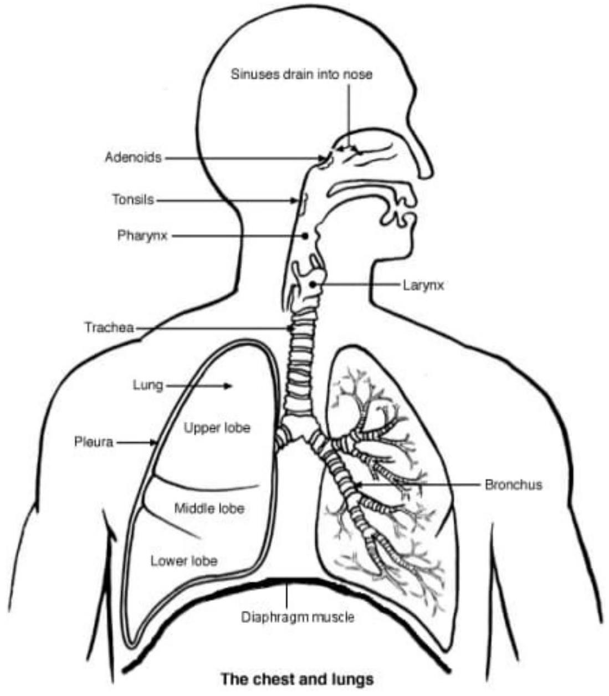

Anatomy of the Respiratory System
Introduction
Respiratory system is the network of organs and tissues that help in breathing. It consists of
- Upper respiratory organs
- Lower respiratory organs and
- Accessory organs.
1. Upper respiratory tract organs
- Nose
- Pharynx
- Larynx
2. Lower respiratory tract organs
- Trachea
- Bronchi and
- Lungs
3. Accessory structures of respiration
- Oral cavity
- Rib cage and
- Diaphragm
Organs of the respiratory system
- Nose
- Mouth
- Throat (pharynx)
- Voice box (larynx)
- Wind pipe (trachea)
- Large airways (bronchi)
- Small airways (bronchioles)
- Lungs
- Diaphragm
1. The nose
The internal nose is divided into left and right nasal cavities by the nasal septum. The internal nose also consists of the skin-lined region known as the vestibule and the mucosalined region known as the nasal cavity proper.
The nasal vertebule is the frontmost part of the nasal cavity enclosed by cartilages. The vestibule is lined with skin, hair follicles and a large number of sebaceous glands. The nose is the first organ of the respiratory system. The nasal cavities open anteriorly to the face through the two nares. Posteriorly the cavities communicate with the nasal pharynx by two apertures called choanae.
2. Mouth (oral cavity) - discussed on digestive system.
3. Thoracic pharynx
Regionally, the pharynx is divided into three parts which are from superior to inferior.
- The nasal pharynx (superior)
- The oral pharynx (middle) and
- The laryngeal pharynx (inferior)
The pharynx isa muscular tube that connects the nasal cavities to the larynx and oesophagus.
The 4 layers of pharynx
The walls of naso pharynx, oral pharynx and laryngo pharynx are composed of four layers. From internal to external the layers are;
- the mucusa
- Sub mueusa
- Muscle layer and
- Fibrosa.
4. Voice box (larynx)
- The larynx is located in the anterior compartment of the neck.
- Between C3 and S6.
- It is continuous inferiorly with the trachea and opens superiorly into the laryngeal part of pharynx.
- It is a hollow, tubular structure connected to the top of wind pipe (trachea).
- Air passes through the larynx on its way to the lungs.
- The larynx also produces vocal sounds and prevents passage of food and other foreign particles into lower respiratory tract.
Major parts of the larynx
- The thyroid cartilage (anterior)
- Epiglottis (superior) and
- Cricoid cartilages (inferior)
5. Wind pipe (trachea)
- The trachea is composed of about 20 rings of tough cartilage.
- Moist, smooth tissue called mucusa lines the inside of the trachea.
- The trachea widens and lengthens slightly with each breath in, returning to its resting size with each breath out.
- It is a tube-like structure within the neck and upper chest.
- It transports air to and from the lungs when a person breathes.
- The trachea is about 10-11 cm in length and the number of cartilages in the trachea varies from 16-20.
The layers of the trachea
- The walls of the trachea is composed of;
- Mucasa
- Submucosa
- Cartilaginous layer and
- Adventitia
The trachea bifurcates at its lower end at the level of the 5th thoracic vertebra into bronchi.
- The left bronchi and
- The right bronchi
6. The bronchi
The bronchi are the airways that lead from the trachea into the lungs and then branch off into progressively smaller structures until they reach the alveoli.
Alveoli are tiny sacs that allow for the exchange of oxygen and carbon dioxide in the lungs. The right bronchus is slightly larger than the left one. Because of this, foreign objects breathed into the lungs often end up in the right bronchus. The bronchi are lined with the same type of mucus that lines the rest of the respiratory tract. Bronchus - is a passage of airway in the respiratory tract that conducts air into the lungs. The bronchi branch into smaller tubes called bronchioles.
7. The lungs
They are conical in shape with a narrow-rounded apex at the top. The lungs are the major organs of the respiratory system. They are divided into sections or lobes. The right long has three lobes and is slightly larger than the left long. The left long has two lobes. The lungs are separated by the mediastinum. The right lung has three lobes called
- Upper
- Middle and
- Lower lobes
The left long only has two lobes
- The upper and
- The lower
Anatomically the lungs are located in the chest on either side of the heart in the rib cage/thoracic cavity.
The lungs are covered by a lining called the pleura which has two layers. The inner layer covers the lungs and is called visceral pleura. It is insensitive to pain due to poor innervation (lack sensory innervation)
The outer layer lines the rib cage/ thoracic cavity and is called parietal pleura. It covers entire superior surface of diaphragm. It is highly sensitive to pain. It does not extend above the superior thoracic in let.
Between the two layers is a liquid fluid called pleural fluid. The area that contains pleural fluid is known as the pleural space.
Long structure
- Base -it is the inferior portion of lung that rests on the dome of the diaphragm.
- Apex- the blunt superior end of the lung.
- Lubes (two or three) - these are separated by fissures within the lungs.
- Costal surface- facing ribs
- Medial surface- facing mediastinum
- Vertebral part - facing vertebral column (posterior part)
- Ventral part- facing the sternum)
8. Diaphragm
The diaphragm is dome shaped with the peripheral segments attached to the chest wall and abdominal cavity.
It is located at the inferior most aspect of the rib cage. It separates the thoracic and abdominal cavities. There are a number of openings in the diaphragm through which structures pass between the thoracic and abdomen. There are three large openings.
- The aorta - passage of aorta
- The oesophageal - passage of esophagus
- The caval opening - passage of inferior vena cava and right phrenic nerve
It is located at T 8 level of vertebral column.
Lungs Blood Supply
| Arteries | Veins |
|---|---|
|
|
Diagrams
Artenal, venous and nerve supply to lungs.
Diagram showing all organs of respiratory system.